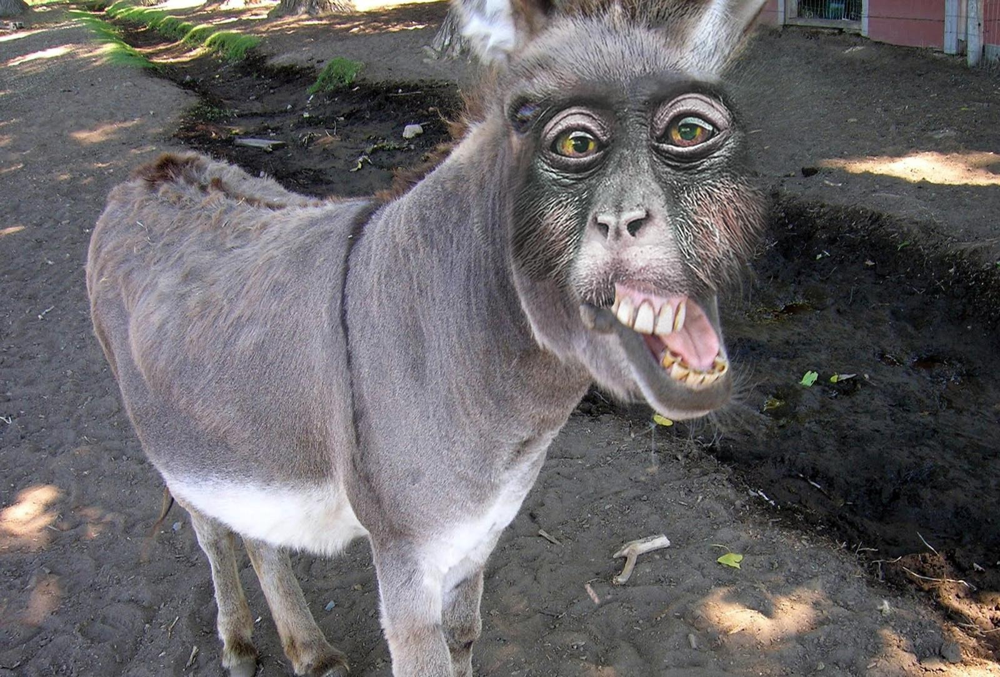
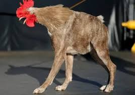

SEMEN
Når du tror du har sett alt, dukker denne pensjonerte action-helten opp. Hunden på bildet har levd så lenge at den husker da gress fortsatt var billig og postmannen faktisk løp fra den. Nå lever den sitt beste liv: litt krokete, litt sur, men fortsatt klar til å ta kampen opp med en støvsuger eller to.
Selv om den ser ut som den akkurat har teleportert fra et annet dimensjonsrom (eller har stått opp med feil bein – bokstavelig talt), så er den fortsatt en legende. En vandrende, knurrende tidskapsel.
Kort sagt: En badass oldefar i pels, som tenker
«jeg er kanskje gammel, men blin, jeg er fortsatt sjefen her.»

Eggebikkja
Hvis du noen gang har lurt på hvordan det hadde sett ut hvis en hund våknet en dag og bestemte seg for å bli en høne… vel, her har du svaret. Dette majestetiske vesenet – halv hund, halv høne, 100% forvirret – er resultatet av enten et veldig kreativt prosjekt eller et veldig kaotisk univers.
Den vandrer rundt som om den har glemt hvilken dyreart den egentlig tilhører. Den galer ikke, den bjeffer ikke — den lager en merkelig hybridlyd som naboene fortsatt prøver å finne ut av.
Men én ting er klart:
Dette dyret ble ikke født for å passe inn.
Det ble skapt for å skape kaos i fjøset.